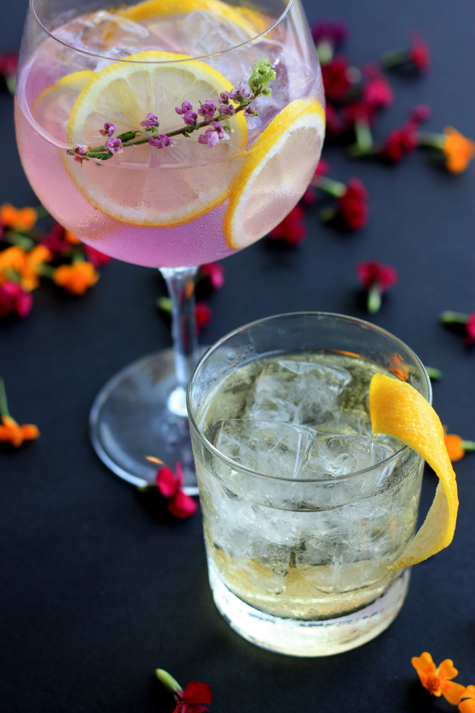

Heimdal Forest

Ingredients:
- 2 oz whiskey
- 1 oz elderflower liqueur
- 1 oz green apple juice
- Splash of soda water
- Garnish: Apple slice, rosemary sprig
Process:
- Combine the whiskey, elderflower liqueur, and green apple juice in a shaker with ice.
- Shake gently and strain into a glass with fresh ice.
- Top with a splash of soda water.
- Garnish with a slice of green apple and a sprig of rosemary.
Speciality
A drink as steady and reliable as Heimdal himself, this forest-inspired concoction offers a refreshing taste with notes of green apple and a hint of floral elderflower.